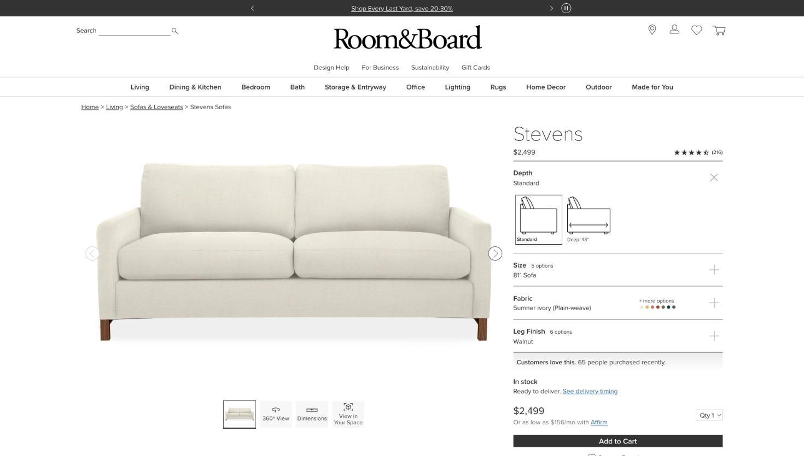

Leah P1
- How she sources
- Solo residential, Twin Cities. Big-box and catalogue retail, one project at a time. Every save this week goes to the same project and the same room.
- At save time she needs
- Price right, image right, and the thing landing in the room she's working in without re-picking it thirty times a day.
- Stood in by
- roomandboard · dwr · rh · wayfair · hedgehouse · pinterest